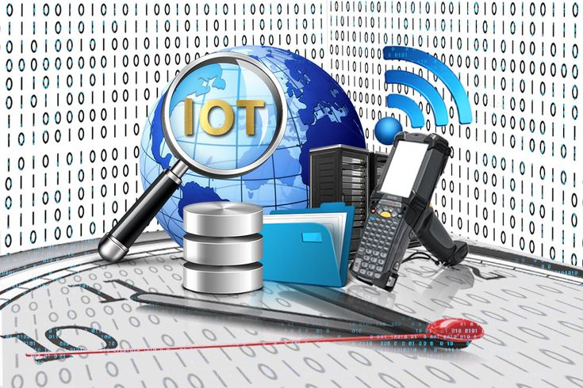
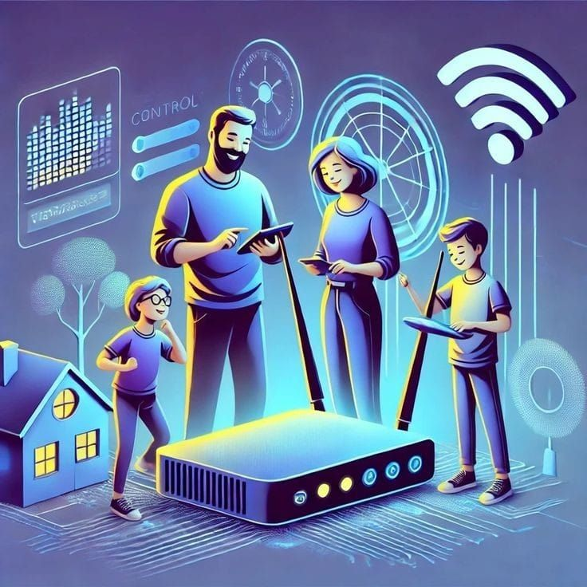
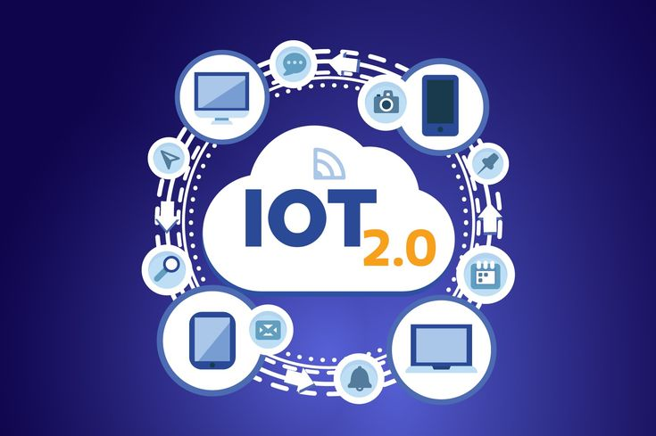

INFORMACIÓN GENERAL
La Conectividad Avanzada es la base de la nueva era digital, donde millones de dispositivos se comunican entre sí a través del Internet de las Cosas (IoT). Desde hogares inteligentes hasta ciudades conectadas, esta tecnología permite una interacción fluida entre humanos, máquinas y entornos digitales.
🌐 ¿Qué es el IoT?
El Internet de las Cosas (IoT) consiste en una red de objetos físicos —sensores, electrodomésticos, vehículos, cámaras— conectados a internet, que recopilan y comparten datos en tiempo real. Su objetivo es automatizar procesos, mejorar la eficiencia y ofrecer experiencias personalizadas.
💡 Ejemplos cotidianos:
- Casas inteligentes con control por voz.
- Relojes inteligentes que monitorean la salud.
- Sensores ambientales en ciudades sostenibles.
- Sistemas agrícolas automatizados.
Esta conectividad transforma industrias completas y acerca la tecnología a la vida diaria,
potenciando un mundo más interconectado.
Información general: La conectividad avanzada, el Internet de las Cosas (IoT) y las experiencias inmersivas
son pilares de la transformación digital global. La conectividad avanzada se refiere a redes móviles y fijas de
alta velocidad, baja latencia y gran capacidad, como el 5G y próximamente el 6G. El IoT permite que objetos físicos
—como sensores, electrodomésticos, vehículos o maquinaria— se conecten a internet para recopilar, compartir y analizar datos.
Por su parte, las experiencias inmersivas, como la realidad aumentada (AR), la realidad virtual (VR) y la realidad extendida (XR),
ofrecen entornos digitales envolventes que simulan o complementan el mundo físico. Estas tecnologías están convergiendo para crear ecosistemas inteligentes en sectores como salud
, educación, industria, entretenimiento y ciudades inteligentes.

AVANCES EN EXPERIENCIAS INMERSIVAS
Las experiencias inmersivas combinan tecnologías como la realidad virtual (VR), aumentada (AR) y mixta (MR) con conectividad avanzada para ofrecer entornos digitales realistas y participativos.
Estas experiencias se utilizan en educación, medicina, turismo, diseño y entretenimiento, donde permiten visualizar datos o escenarios en tres dimensiones y en tiempo real.
🔍 Avances recientes:
- Conexión 5G para menor latencia en dispositivos VR/AR.
- IoT aplicado a simuladores médicos y educativos.
- Espacios virtuales colaborativos en tiempo real.
- Integración de sensores hápticos que simulan el tacto.
Gracias a la conectividad ultrarrápida, las fronteras entre el mundo físico y
el digital se están desvaneciendo, dando lugar a nuevas formas de aprendizaje, comunicación y creatividad.
Avances actuales: En los últimos años, el despliegue de redes 5G ha permitido velocidades de hasta 10 Gbps y latencias inferiores a 1 milisegundo, lo que ha impulsado el crecimiento del IoT y
la adopción de experiencias inmersivas. En el ámbito industrial, el IoT se usa para monitoreo predictivo, automatización de procesos y gestión energética eficiente. En salud, dispositivos portátiles permiten
el seguimiento remoto de pacientes y la detección temprana de enfermedades. Las experiencias inmersivas se han integrado en la educación con simulaciones interactivas, en el turismo con recorridos virtuales y en el entretenimiento
con videojuegos y conciertos en el metaverso. Además, tecnologías como el edge computing y la inteligencia artificial están mejorando el procesamiento de datos en tiempo real y la personalización de experiencias.

EL FUTURO DE LA CONECTIVIDAD AVANZADA
En el futuro, IoT y las experiencias inmersivas convergerán para crear un ecosistema inteligente e interactivo en todos los aspectos de la vida.
🚀 Tendencias futuras:
- Integración con inteligencia artificial y redes 6G.
- Ciudades inteligentes completamente automatizadas.
- Espacios virtuales accesibles desde cualquier dispositivo.
- Comunicación sensorial en entornos digitales.
La conectividad avanzada no solo será una herramienta, sino un entorno en sí mismo: un puente entre el mundo físico y el digital que impulsará la innovación, la sostenibilidad y la inclusión global.
Futuro: Para 2030, se espera que el número de dispositivos IoT conectados supere los 30 mil millones, y que las redes 6G ofrezcan velocidades hasta 100 veces superiores al 5G, con soporte para comunicaciones holográficas,
multisensoriales y ultra confiables. Las experiencias inmersivas evolucionarán hacia entornos completamente interactivos, donde los usuarios podrán sentir, ver y manipular objetos digitales como si fueran reales.
Esta convergencia tecnológica permitirá fábricas autónomas, hospitales inteligentes, aulas virtuales hiperrealistas y ciudades conectadas que optimicen recursos y mejoren la calidad de vida.
Además, se prevé una mayor integración entre conectividad, IA y sostenibilidad, con redes energéticamente eficientes y dispositivos diseñados para reducir el impacto ambiental.